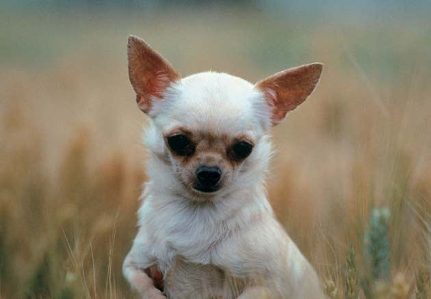
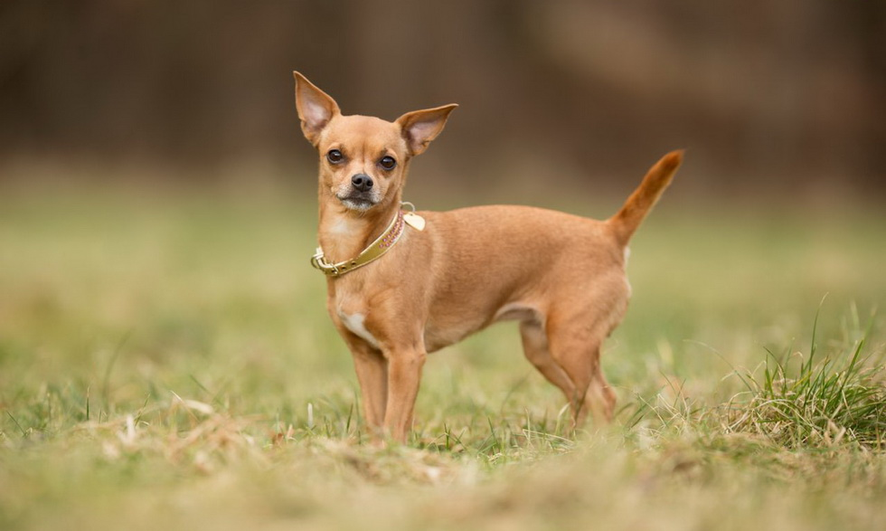

×
Τζάκ ράσελ


|
| Pάτσα |
Τζάκ ράσελ |
| Υψος |
Θυληκό: 23-30cm Αρσενικό:26-32cm |
| Βάρος |
Θηλυκό: 5-8 kg Αρσενικό: 6-10 kg |
| Μεσος Ορος Ζωής |
13 Ετη |
| Xαρακτήρας |
Απόμακρο, Πιστό, Ανεξάρτητο, 'Ησυχο |
Πληροφορίες
Το Τζάκ Ράσελ είναι μια μικρή έκδοση σκύλου εργασίας, με πολλές ιδιότητες και μια εύθυμη προσωπικότητα. Τα χρώματά του είναι συνήθως άσπρο, με κοκκινωπά ή καφετιά σημάδια, που πολλές φορές συμπληρώνονται από μεγάλα μαύρα μπαλώματα. Το κρανίο είναι επίπεδο μεταξύ των αυτιών τα οποία είναι σηκωμένα, αλλά η μύτες γέρνουν προς τα εμπρός, δίνοντας μια χιουμοριστική εικόνα στο πρόσωπο του σκύλου. Τα μάτια του είναι αμυγδαλωτά και συνήθως το χρώμα τους είναι καφέ σκούρο. Το Τζάκ Ράσελ Τεριέ έχει ένα πολύ εύκαμπτο σώμα και είναι απίστευτα ευκίνητο. Το στήθος του είναι μικρό-μεσαίο, πράγμα που το βοηθά να κυνηγά το θήραμα με μεγάλη ταχύτητα. Αυτή η φυλή αρέσκεται σε δραστηριότητες, είναι αθλητική, αφού η ενέργειά της πηγάζει σε αφθονία. Η κοντή τους ουρά συνήθως είναι όρθια, προσδίδοντας μια έκφραση ενέργειας αλλά και ισχυρού χαρακτήρα. Το σκύλο θα τον συναντήσετε συχνότερα σε άσπρο χρώμα παρά σε οποιοδήποτε άλλο. Το όνομά του «Τζακ Ράσελ» χρησιμοποιείται για να περιγράψει πολλούς τύπους διαφορετικών τεριέ με αυτό το ανάστημα. Αυτοί οι σκύλοι τα πάνε πολύ καλά με τα παιδιά, αν και μερικές φορές μπορεί να εκδηλώσουν υπερβολικά την αγάπη τους. Το θήραμα που αγαπούν να κυνηγούν είναι η αλεπούδες και ασβούς. Μπορούν να τους ξετρυπώσουν από οποιοδήποτε σημείο, ακόμα και αν βρίσκονται σε μικρά και στενά λαγούμια. Τα πόδια του Τζακ Ράσελ Τεριέ είναι κάπως λυγισμένα ή «στριμμένα» πράγμα που μπορεί να είναι σημάδι αχονδοπλασίας. Οι μύες τους από την άλλη έχουν ένα δυνατό δέσιμο που επιτρέπει στον σκύλο δραστηριότητες αντοχής χωρίς κανένα περιορισμό. Γενικά το σώμα τους, σε σχέση με το ύψος έχει σωστή διαμόρφωση, ενώ προσφέρει και μια ελκυστική εμφάνιση
Τα Τζακ Ράσελ Τεριέ είναι χαρούμενα, αφοσιωμένα, αγαπητά αλλά και πολύ ζωηρά. Αυτοί οι σκύλοι είναι πραγματικά πολύ διασκεδαστικοί, λατρεύουν να παίζουν οποιοδήποτε παιχνίδι με το αφεντικό τους, είναι άριστη παρέα για τα παιδιά και πολύ φιλικοί με τους ξένους. Η ανεξαρτησία τους είναι ένα κομμάτι που θα το καθορίζουν μόνοι τους και μπορεί να σας δυσκολέψει κατά τις περιόδους της εκπαίδευσης. Αν υπάρχει όμως υπομονή και επιμονή, το αποτέλεσμα είναι σίγουρο ότι θα σας αποζημιώσει. Η φυλή δείχνει μια επιθετικότητα προς τους άλλους σκύλους αλλά και σε μικρότερα κατοικίδια. Γι’ αυτό καλό είναι την περίοδο της κοινωνικοποίησης να συναντιούνται όσο το δυνατόν περισσότερο με άλλους σκύλους και γενικότερα με άλλα ζώα. Το Τζάκ Ράσελ μπορεί να γίνει πολύ καταστρεπτικό όταν βαριέται, γι’ αυτό είναι σημαντικό να διατηρείτε το επίπεδο ευκινησίας υψηλό με πολλές ασκήσεις και παιχνίδι. Οι φυσικές ικανότητές του διαφέρουν, πράγμα που του δίνει ένα προνόμιο ικανότητας και αντοχής, σε σχέση με άλλες φυλές τεριέ. Αυτοί οι σκύλοι είναι πολύ αγαπητοί και στοργικοί και θα χρειαστούν την αμέριστη προσοχή σας. Αν δεν τους δίνετε την σημασία που απαιτείται, τότε μπορούν να γίνουν πολύ ενοχλητικοί γαυγίζοντας, σκάβοντας στο χώμα και γενικά καταστρέφοντας οτιδήποτε θεωρούν ιδανικό. Η δραστηριότητες σε καθημερινή βάση είναι ότι καλύτερο για να κρατάτε μια σωστή και ισορροπημένη σχέση. Πολλές φορές λόγω τις περιέργειας τους αλλά και του μεγέθους τους, είναι πολύ εύκολο να βρουν μπελάδες. Δεν είναι σκύλοι σαλονιού και δεν τους αρέσει να μένουν για μεγάλα χρονικά διαστήματα σε ένα μέρος. Έτσι ή εναλλαγή περιβάλλοντος θα βοηθήσει να εκτονώσετε την ενέργεια και την περιέργειά τους
Το Τζάκ Ράσελ είναι από τους σκύλους που προσαρμόζονται εύκολα σε οποιοδήποτε περιβάλλον, απαραίτητη προϋπόθεση όμως είναι η καθημερινή άσκηση. Αν θέλετε να αναπτύξετε της αθλητικές σας ικανότητες, αυτή η φυλή είναι ιδανική. Ακόμα και τις μέρες που ο καιρός είναι βροχερός και εμποδίζει τις μακρινές βόλτες, το παιχνίδι με ένα μπαλάκι ή φρίζμπι είναι ιδανικό για να εκτονωθεί ο σκύλος, αποφεύγοντας έτσι την πλήξη που μπορεί να έχει δυσάρεστες συνέπειες για τα πράγματά σας. Η ιδανική άσκηση όμως, όπως ένας μεγάλος περίπατος καθημερινά είναι αυτό που χρειάζεται ένα Τζάκ Ράσελ. Αν το πάρκο που συνηθίζετε να πηγαίνετε με το σκύλο σας δεν έχει περίφραξη, τότε μην αφήσετε τον σκύλο χωρίς λουρί, αν δεν θέλετε να τον ψάχνετε. Αυτό μπορεί να γίνει μετά από μια σωστή και ολοκληρωμένη εκπαίδευση για να μην αντιμετωπίσετε τέτοιου είδους καταστάσεις. Αυτοί οι σκύλοι είναι ιδιαίτερα ευφυής γι’ αυτό μαθαίνουν πολύ γρήγορα. Η εξαιρετική τους αντοχή και το υψηλό επίπεδο ενέργειας μπορεί να δυσκολέψουν αρκετά τους ιδιοκτήτες μεγαλύτερης ηλικίας.Το Τζάκ Ράσελ είναι μια πολύ έξυπνη φυλή που μπορεί να αφομοιώσει και να εκτελέσει εντολές και δεξιότητες πολύ γρήγορα. Ανταποκρίνονται πολύ καλά στην βασική εκπαίδευση, αλλά για υψηλότερες δεξιότητες το πιθανότερο είναι να σας δυσκολέψουν. Αν η υπομονή και η επιμονή σας δεν έχουν μεγάλες αντοχές, τότε καλό θα ήταν να απευθυνθείτε σε κάποιον επαγγελματία. Κατά την εκπαίδευσή τους καλό θα ήταν να αναφέρουμε πως θα έχετε να κάνετε με ένα υπερκινητικό σκύλο, που πολλές φορές έχει την τάση να γίνεται ανεξέλεγκτος. Η θετική μέθοδος εκπαίδευσης συνίσταται, δεδομένου πως δεν θα έχει την καλύτερη αντίδραση αν επιβάλετε τιμωρίες και σκληρή διόρθωση. Επίσης είναι πολύ ευαίσθητος στον ήχο, γι’ αυτό ο τόνος της φωνής σας κατά τη συνεδρία της εκπαίδευσης θα πρέπει να είναι ήρεμος και σταθερός. 2 με 3 επαναλήψεις σε καθημερινή βάση είναι αυτές που θα βοηθήσουν εσάς να καταλάβετε τον σκύλο σας, αλλά και τον σκύλο να καταλάβει τι του ζητάτε. Το παιχνίδι και η θετική μέθοδος εκπαίδευσης με επιβράβευση μετά από κάθε επιτυχία, είναι σίγουρο ότι θα βελτιώνουν σταδιακά το επίπεδο του
×

|

|
| Pάτσα |
Τσιουάουα |
| Υψος |
Θυληκό: 15-21cm Αρσενικό:17-24cm |
| Βάρος |
Θηλυκό: 1-3 kg Αρσενικό: 2-4 kg |
| Μεσος Ορος Ζωής |
11 Ετη |
| Xαρακτήρας |
Αφοσιωμένο, Ζωηρό, Επάγρυπνο, Γρήγορο |
Πληροφορίες
Το Τσιουάουα είναι το μικρότερο από όλες τις ράτσες. Έχει μικροσκοπικό λεπτό σκελετό, το κεφάλι είναι στην κορυφή στρογγυλό σαν θόλος με στενή απόληξη και τα αυτιά στητά. Το τρίχωμα μπορεί να είναι ή κοντό και λείο ή μακρύ. Το λείο τρίχωμα αποτελείται από γυαλιστερή, μαλακή τρίχα, λιγοστή στο κεφάλι και τα αυτιά. Το μακρύ τρίχωμα έχει μακρύτερη, μαλακή τρίχα ελαφρώς σγουρή. Υπάρχει μεγάλη ποικιλία όσων αφορά το χρώμα. Μπορεί να είναι μονόχρωμο άσπρο, μαύρο, καστανοκόκκινο ή σχεδόν οποιοδήποτε άλλο χρώμα, αλλά μπορεί επίσης και να παρουσιάσει μοτίβα από δύο ή περισσότερα χρώματα.
Είναι χαριτωμένο, δραστήριο και εμφανίζει ανθρώπινες εκφράσεις. Αυτός ο μικροσκοπικός σύντροφος είναι βαθιά αφοσιωμένος και πιστός. Είναι τολμηρό, άφοβο και ιδιαίτερα προστατευτικό για τον ιδιοκτήτη του. Είναι ευτυχισμένο όταν απολαμβάνει την προσοχή σας. Είναι επιφυλακτικό στην παρουσία ξένων και γίνεται άριστος φύλακας. Η ράτσα αυτή, δεν είναι κατάλληλη για οικογένειες με μικρά παιδάκια. Το μικρό τους μέγεθος τα καθιστά «εύκολη λεία» για παιδάκια τα οποία θέλουν να παίξουν με το σκυλάκι. Επιπλέον, το ταμπεραμέντο τους και η τάση που έχουν να δαγκώνουν όταν νιώθουν ότι απειλούνται, τα καθιστά ακατάλληλα για μικρά παιδάκια, τα οποία δεν είναι σε θέση ακόμα να χειριστούν σωστά ένα σκυλάκι. Είναι καλύτερο να περιμένετε μέχρι το παιδί να γίνει 6-7 χρονών, ή μέχρι εσείς κρίνετε ότι είναι εντάξει για να βάλετε στο σπίτι σας ένα τσιουάουα.
Το Tσιουάουα έχει τη φήμη ενός νευρικού και πεισματάρικου σκυλιού και πολλοί μπορεί να βρουν δύσκολη την εκπαίδευσή του. Παραταύτα, είναι έξυπνο και έχει την ικανότητα να μαθαίνει γρήγορα. Ανταποκρίνεται πολύ καλά σε κατάλληλη εκπαίδευση. Χρειάζεται απλώς να έχετε λίγη υπομονή και να ανταμείβετε τα θετικά της συμπεριφοράς παρά να τιμωρείτε τα αρνητικά. Η κοινωνικοποίηση, απαραίτητη για αυτή την ράτσα, πρέπει να ξεκινήσει από μικρή ηλικία, να είναι εντατική και ευρεία.Χτενίζετε περιστασιακά το κοντότριχο Tσιουάουα και καθημερινά το μακρύτριχο.. Σε αντίθεση με πολλές μακρύτριχες ράτσες, το μακρύτριχο τσιουάουα χρειάζεται ελάχιστη περιποίηση και δεν είναι απαραίτητο το κούρεμα. Αντίθετα με αυτό που πιστεύουν πολλοί, το μακρύτριχο χάνει λιγότερο τρίχωμα από το κοντότριχο! Ελέγχετε τα αυτιά συχνά και κόβετε τα νύχια όποτε θεωρείτε απαραίτητο.